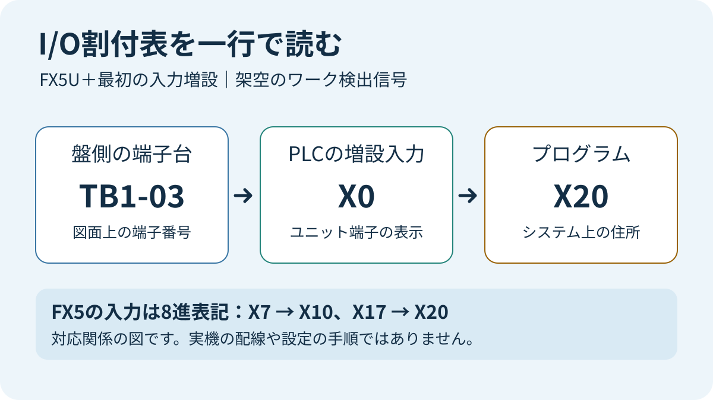

1. I/O割付は「現場の機器とPLCの住所の対応」
I/O割付表は、センサーなどの信号がどの端子台を経由し、PLCのどこへつながり、プログラムのどの番号で扱われるかを一行ずつ示す資料です。番号を比較する前に、どの種類の番号を見ているかを確かめます。
この記事は既存の割付を読み取るための解説
三菱電機の例で、通常のローカルデジタル入出力を扱います。リモートI/O、アナログ、特殊・安全ユニットの割付は別の仕様です。実機への書込み、強制ON/OFF、通電中の配線確認は扱いません。
2. 似ている3つの番号を分ける
| 見る場所 | 表記例 | 意味 |
|---|---|---|
| 盤側の端子台 | TB1-03 | 図面上の端子台と端子の位置。PLCデバイス番号ではない。 |
| PLCのユニット・端子 | 増設入力ユニットの表示 X0 | 対象ユニット内の端子表示。システム全体のX0とは限らない。 |
| プログラムのデバイス | X20 | 構成に基づいて割り当てられた入力の住所。Yは出力の住所。 |
同じ「X0」が端子に印刷されていても、どのユニットの端子かで意味が変わります。端子台番号と同様、ラベルだけでPLC内の住所を決めないのがポイントです。
3. I/O割付表を一行で読む
以下はFX5U-32MR/ES（内蔵入力16点）に、FX5-16EX/ESを最初の通常の入力増設として付けた教材例です。TB1-03という端子台番号と機器名は架空です。

| 機器・信号 | 盤側端子 | 接続先 | プログラム |
|---|---|---|---|
| ワーク検出（架空） | TB1-03 | 最初の増設入力ユニット、端子の表示 X0 | X20 |
この構成では、内蔵入力は X0～X17。FX5のX/Yは8進表記なので、X7の次はX10、X17の次はX20です。通常の増設では入力と出力をそれぞれ続きから割り付け、増設ユニットの番号は下1桁が0から始まります。この教材例のX20を別の設備へそのまま当てはめないでください。
ベースにユニットを装着するiQ-Rでは見方が異なる
iQ-Rではユニットごとの先頭XYと入出力点数を、承認済みプロジェクトのユニット構成で照合します。先頭XYは16進表記です。FX5の8進連番や、FX5のインテリジェント機能ユニットの「ユニットNo.」と混同しません。
4. 入力X：現場信号とプログラム表示を見分ける
入力の例は押しボタンやワーク検出センサーです。まず図面と割付表で目的の信号を同定し、承認済みプロジェクトのコメントで対象Xを照合します。コメントと現物表示が異なれば、どちらが最新かを記録で確認し、推測で書き換えません。
LEDとXは別の証拠
既存の安全な観察記録を使う場合も、ユニットの入力表示はその位置の手掛かり、プログラムのXは指定デバイスの状態です。両者が合わなければ、先にユニットの取り違え、機種、割付、プロジェクトの対象を照合します。
5. 出力Y：指令が出たことと動いたことは別
プログラムでランプなどのYがONを示しても、実際に負荷へ電力が届いたことや、負荷が動作したことまでは証明しません。割付表をYから逆向きに読み、記録上の出力ユニット・端子台・負荷を照合します。
切り分けの境目
プログラム側の指令、ユニット側の表示、負荷の結果を別々に記録すると、次に確認する系統を特定しやすくなります。盤内の点検や電気測定が必要なときは、許可された有資格者等が事業所の停止・隔離・無電圧確認手順に従って判断します。
6. 食い違いがあるときの読み合わせ
- 図面とI/O割付表の対象設備・改訂番号・信号名を合わせる。
- 端子台番号と、PLCの型式・対象ユニットの位置および端子表示を別々に写す。
- 承認済みの構成とプログラムから、対象のX/Yとコメントを照合する。
- 一致しない欄と資料の版を残し、設備責任者に確認する。確定までは割付や設定を変更しない。
「同じ数字だから一致」とはしない
端子台の「03」とプログラムの「X3」は、数字が似ていても別の番号です。資料上の対応関係を一行ずつたどります。
7. 確認は読み取りの範囲にとどめる
不明な割付を試運転で確かめない
誤った信号を操作すると設備が動くおそれがあります。現場での強制出力、設定書込み、通電中の端子確認、安全回路の代用や無効化はこの手順に含めません。図面と承認済み記録で解決しない場合は設備責任者へ引き継ぎます。
メーカー公式資料
- 三菱電機 MELSEC iQ-F FX5ユーザーズマニュアル（ハードウェア編）SH-082452ENG-L（英語版）：2.4の入出力番号・ユニット番号。
- 三菱電機 FX5スクールテキスト JY997D69701A（英語版）：2.5.4のモデル構成例。
- 三菱電機 FAQ No.25095：先頭XYとユニットNo.の違い。
公式資料確認日：。実機の判断には対象型式の最新資料を参照してください。
8. まとめ
- 割付表では機器、端子台、ユニットの位置、X/Yを分ける。
- FX5の8進とiQ-Rの先頭XYの16進は混ぜない。
- 一致しない箇所は資料の版と一緒に記録し、自己判断で操作・変更しない。